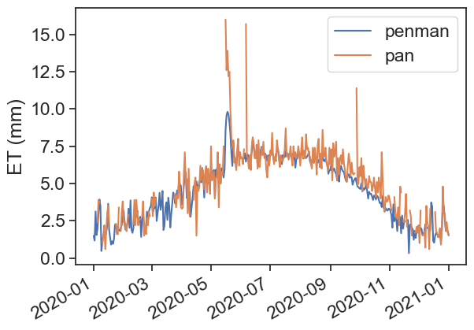

!pip install pyet
!pip install noaa_ftp10 Exercises
We will calculate evapotranspiration using two methods: Thornthwaite and Penman. After that, we will compare these estimates with measurements of pan evaporation.
10.1 Download data from the IMS
Please follow the instructions below exactly as they are written. Go to the Israel Meteorological Service website, and download the following data:
- 10-min data
- On the navigation bar on the left, choose “10 Minutes Observations”
- Clock: Local time winter (UTC +2)
- Choose the following date range: 01/01/2020 00:00 to 01/01/2021 00:00
- Choose station Bet Dagan
- Select units: Celcius, m/s, KJ/m\(^2\)
- Under “Select parameters”, choose “Check All”.
- Choose option “by station”, then “Submit”.
- “Download Result as” CSV, call it “bet-dagan-10min.csv”.
- radiation data
- On the navigation bar on the left, choose “Hourly Radiation”
- Clock: Local time winter (UTC +2)
- Choose the following date range: 01/01/2020 00:00 to 01/01/2021 00:00
- Select hours: Check all hours
- Choose station Bet Dagan
- Select units: KJ/m\(^2\)
- Under “Select parameters”, choose “Check All”
- “Download Result as” CSV, call it “bet-dagan-radiation.csv”
- pan evaporation data
- On the navigation bar on the left, choose “Daily Observations”
- Choose the following date range: 01/01/2020 00:00 to 01/01/2021 00:00
- Choose station Bet Dagan Man
- Select units: Celcius
- Under “Select parameters”, choose “Check All”
- “Download Result as” CSV, call it “bet-dagan-pan.csv”
10.2 Install and import relevant packages
We will need to use two new packages:
If you don’t have them installed yet, run this:
Once they are installed, import all the necessary packages for today’s exercises.
import matplotlib.pyplot as plt
import matplotlib
import numpy as np
import pandas as pd
from pandas.plotting import register_matplotlib_converters
register_matplotlib_converters() # datetime converter for a matplotlib
import seaborn as sns
sns.set(style="ticks", font_scale=1.5)
import pyet
from noaa_ftp import NOAA10.3 import 10-minute data
df = pd.read_csv('bet-dagan-10min.csv',
# encoding = "ISO-8859-8", # this shows hebrew characters properly
na_values=["-"] # substitute "-" for NaN
)
df['timestamp'] = pd.to_datetime(df['Date & Time (Winter)'], dayfirst=True)
df = df.set_index('timestamp')
# resample to daily data according to "mean"
df = df.resample('D').mean()
# convert hecto pascals (hPa) to kilo pascals (kPa)
df["Pressure (kPa)"] = df["Pressure at station level (hPa)"] / 10.0
df/var/folders/c3/7hp0d36n6vv8jc9hm2440__00000gn/T/ipykernel_14026/111106941.py:8: FutureWarning: The default value of numeric_only in DataFrameGroupBy.mean is deprecated. In a future version, numeric_only will default to False. Either specify numeric_only or select only columns which should be valid for the function.
df = df.resample('D').mean()| Pressure at station level (hPa) | Relative humidity (%) | Temperature (°C) | Maximum temperature (°C) | Minimum temperature (°C) | Grass temperature (°C) | Wind direction (°) | Gust wind direction (°) | Wind speed (m/s) | Maximum 1 minute wind speed (m/s) | Maximum 10 minutes wind speed (m/s) | Gust wind speed (m/s) | Standard deviation wind direction (°) | Rainfall (mm) | Pressure (kPa) | |
|---|---|---|---|---|---|---|---|---|---|---|---|---|---|---|---|
| timestamp | |||||||||||||||
| 2020-01-01 | 1013.263889 | 80.590278 | 12.375000 | 12.486806 | 12.268750 | 13.061111 | 166.069444 | 166.673611 | 1.552083 | 2.013889 | 1.706250 | 2.325694 | 12.588194 | 0.000000 | 101.326389 |
| 2020-01-02 | 1011.922917 | 85.631944 | 12.020833 | 12.104861 | 11.921528 | 11.669444 | 149.333333 | 150.062500 | 2.207639 | 2.877083 | 2.438194 | 3.423611 | 12.726389 | 0.140278 | 101.192292 |
| 2020-01-03 | 1013.757639 | 60.756944 | 12.962500 | 13.086111 | 12.838889 | 13.389583 | 190.513889 | 191.277778 | 4.763194 | 5.940278 | 4.995139 | 7.355556 | 10.436111 | 0.000000 | 101.375764 |
| 2020-01-04 | 1011.581250 | 76.909722 | 10.849306 | 10.938194 | 10.772222 | 10.311806 | 163.958333 | 164.118056 | 5.439583 | 6.996528 | 5.829167 | 8.632639 | 14.309028 | 0.317361 | 101.158125 |
| 2020-01-05 | 1012.361806 | 79.583333 | 12.956250 | 13.053472 | 12.864583 | 13.135417 | 195.784722 | 197.326389 | 4.765278 | 6.120833 | 5.097917 | 7.763889 | 12.976389 | 0.112500 | 101.236181 |
| ... | ... | ... | ... | ... | ... | ... | ... | ... | ... | ... | ... | ... | ... | ... | ... |
| 2020-12-28 | 1014.429861 | 58.729167 | 14.797917 | 14.915972 | 14.659722 | 14.653472 | 93.375887 | 96.758865 | 2.631915 | 3.440426 | 2.842553 | 4.218440 | 11.494326 | 0.000000 | 101.442986 |
| 2020-12-29 | 1015.031944 | 71.215278 | 14.146528 | 14.315278 | 13.986111 | 14.176389 | 97.777778 | 94.631944 | 1.493750 | 1.951389 | 1.630556 | 2.277083 | 14.328472 | 0.000000 | 101.503194 |
| 2020-12-30 | 1013.234028 | 68.923611 | 14.186806 | 14.336111 | 14.047222 | 14.187500 | 63.916667 | 63.722222 | 1.776389 | 2.275000 | 1.936111 | 2.646528 | 9.754861 | 0.000000 | 101.323403 |
| 2020-12-31 | 1011.840972 | 75.465278 | 14.915278 | 15.068056 | 14.763194 | 15.154167 | 165.895833 | 165.062500 | 1.395833 | 1.803472 | 1.546528 | 2.054861 | 10.363194 | 0.000000 | 101.184097 |
| 2021-01-01 | 1012.748760 | 85.115702 | 14.980992 | 15.133884 | 14.817355 | 15.890083 | 182.247934 | 178.190083 | 1.242975 | 1.691736 | 1.396694 | 1.938843 | 15.280992 | 0.000000 | 101.274876 |
367 rows × 15 columns
10.4 import radiation data
df_rad = pd.read_csv('bet-dagan-radiation.csv',
na_values=["-"]
)
df_rad['Date'] = pd.to_datetime(df_rad['Date'], dayfirst=True)
df_rad = df_rad.set_index('Date')
df_rad| Station | Radiation type | Hourly radiation 05-06 (KJ/m^2) | Hourly radiation 06-07 (KJ/m^2) | Hourly radiation 07-08 (KJ/m^2) | Hourly radiation 08-09 (KJ/m^2) | Hourly radiation 09-10 (KJ/m^2) | Hourly radiation 10-11 (KJ/m^2) | Hourly radiation 11-12 (KJ/m^2) | Hourly radiation 12-13 (KJ/m^2) | Hourly radiation 13-14 (KJ/m^2) | Hourly radiation 14-15 (KJ/m^2) | Hourly radiation 15-16 (KJ/m^2) | Hourly radiation 16-17 (KJ/m^2) | Hourly radiation 17-18 (KJ/m^2) | Hourly radiation 18-19 (KJ/m^2) | |
|---|---|---|---|---|---|---|---|---|---|---|---|---|---|---|---|---|
| Date | ||||||||||||||||
| 2020-01-01 | Bet Dagan Rad 01/1991-04/2023 | Global | 0.0 | 10.8 | 270.0 | 594.0 | 1252.8 | 1407.6 | 1800.0 | 1587.6 | 1443.6 | 1123.2 | 482.4 | 57.6 | 0.0 | 0.0 |
| 2020-01-01 | Bet Dagan Rad 01/1991-04/2023 | Direct | 0.0 | 3.6 | 72.0 | 428.4 | 1393.2 | 1281.6 | 1911.6 | 1414.8 | 1112.4 | 1083.6 | 752.4 | 0.0 | 0.0 | 0.0 |
| 2020-01-01 | Bet Dagan Rad 01/1991-04/2023 | Diffused | 0.0 | 10.8 | 216.0 | 403.2 | 543.6 | 586.8 | 590.4 | 684.0 | 770.4 | 637.2 | 252.0 | 57.6 | 0.0 | 0.0 |
| 2020-01-02 | Bet Dagan Rad 01/1991-04/2023 | Global | 0.0 | 10.8 | 241.2 | 518.4 | 1018.8 | 93.6 | 129.6 | 345.6 | 720.0 | 673.2 | 478.8 | 82.8 | 0.0 | 0.0 |
| 2020-01-02 | Bet Dagan Rad 01/1991-04/2023 | Direct | 0.0 | 3.6 | 57.6 | 100.8 | 471.6 | 0.0 | 0.0 | 32.4 | 140.4 | 334.8 | 680.4 | 79.2 | 0.0 | 0.0 |
| ... | ... | ... | ... | ... | ... | ... | ... | ... | ... | ... | ... | ... | ... | ... | ... | ... |
| 2020-12-31 | Bet Dagan Rad 01/1991-04/2023 | Direct | 0.0 | 0.0 | 892.8 | 1998.0 | 2455.2 | 2696.4 | 2710.8 | 2545.2 | 2386.8 | 2066.4 | 1328.4 | 169.2 | 0.0 | 0.0 |
| 2020-12-31 | Bet Dagan Rad 01/1991-04/2023 | Diffused | 0.0 | 14.4 | 158.4 | 270.0 | 320.4 | 360.0 | 388.8 | 403.2 | 378.0 | 316.8 | 219.6 | 54.0 | 0.0 | 0.0 |
| 2021-01-01 | Bet Dagan Rad 01/1991-04/2023 | Global | 0.0 | 14.4 | 302.4 | 882.0 | 1432.8 | 1814.4 | 1962.0 | 1897.2 | 1602.0 | 1170.0 | 572.4 | 75.6 | 0.0 | 0.0 |
| 2021-01-01 | Bet Dagan Rad 01/1991-04/2023 | Direct | 0.0 | 0.0 | 662.4 | 1576.8 | 2181.6 | 2412.0 | 2422.8 | 2343.6 | 2188.8 | 1980.0 | 1350.0 | 126.0 | 0.0 | 0.0 |
| 2021-01-01 | Bet Dagan Rad 01/1991-04/2023 | Diffused | 0.0 | 14.4 | 172.8 | 352.8 | 421.2 | 478.8 | 525.6 | 540.0 | 478.8 | 381.6 | 237.6 | 57.6 | 0.0 | 0.0 |
1098 rows × 16 columns
Choose only “Global” radiation. Then sum all hours of the day, and convert from kJ to MJ.
df_rad = df_rad[df_rad["Radiation type"] == "Global "]
df_rad['daily_radiation_MJ_per_m2_per_day'] = (df_rad.iloc[:, 3:] # take all rows, columns 3 to end
.sum(axis=1) / # sum all columns
1000 # divide by 1000 to convert from kJ to MJ
)
df_rad| Station | Radiation type | Hourly radiation 05-06 (KJ/m^2) | Hourly radiation 06-07 (KJ/m^2) | Hourly radiation 07-08 (KJ/m^2) | Hourly radiation 08-09 (KJ/m^2) | Hourly radiation 09-10 (KJ/m^2) | Hourly radiation 10-11 (KJ/m^2) | Hourly radiation 11-12 (KJ/m^2) | Hourly radiation 12-13 (KJ/m^2) | Hourly radiation 13-14 (KJ/m^2) | Hourly radiation 14-15 (KJ/m^2) | Hourly radiation 15-16 (KJ/m^2) | Hourly radiation 16-17 (KJ/m^2) | Hourly radiation 17-18 (KJ/m^2) | Hourly radiation 18-19 (KJ/m^2) | daily_radiation_MJ_per_m2_per_day | |
|---|---|---|---|---|---|---|---|---|---|---|---|---|---|---|---|---|---|
| Date | |||||||||||||||||
| 2020-01-01 | Bet Dagan Rad 01/1991-04/2023 | Global | 0.0 | 10.8 | 270.0 | 594.0 | 1252.8 | 1407.6 | 1800.0 | 1587.6 | 1443.6 | 1123.2 | 482.4 | 57.6 | 0.0 | 0.0 | 10.0296 |
| 2020-01-02 | Bet Dagan Rad 01/1991-04/2023 | Global | 0.0 | 10.8 | 241.2 | 518.4 | 1018.8 | 93.6 | 129.6 | 345.6 | 720.0 | 673.2 | 478.8 | 82.8 | 0.0 | 0.0 | 4.3128 |
| 2020-01-03 | Bet Dagan Rad 01/1991-04/2023 | Global | 0.0 | 10.8 | 334.8 | 1040.4 | 1612.8 | 1846.8 | 1904.4 | 1947.6 | 1296.0 | 964.8 | 669.6 | 46.8 | 0.0 | 0.0 | 11.6748 |
| 2020-01-04 | Bet Dagan Rad 01/1991-04/2023 | Global | 0.0 | 3.6 | 97.2 | 237.6 | 208.8 | 208.8 | 93.6 | 79.2 | 352.8 | 144.0 | 183.6 | 36.0 | 0.0 | 0.0 | 1.6452 |
| 2020-01-05 | Bet Dagan Rad 01/1991-04/2023 | Global | 0.0 | 7.2 | 118.8 | 226.8 | 421.2 | 882.0 | 1296.0 | 1090.8 | 1242.0 | 1101.6 | 388.8 | 79.2 | 0.0 | 0.0 | 6.8544 |
| ... | ... | ... | ... | ... | ... | ... | ... | ... | ... | ... | ... | ... | ... | ... | ... | ... | ... |
| 2020-12-28 | Bet Dagan Rad 01/1991-04/2023 | Global | 0.0 | 14.4 | 349.2 | 1000.8 | 1551.6 | 1810.8 | 2048.4 | 1796.4 | 1627.2 | 993.6 | 482.4 | 68.4 | 0.0 | 0.0 | 11.7432 |
| 2020-12-29 | Bet Dagan Rad 01/1991-04/2023 | Global | 0.0 | 14.4 | 342.0 | 936.0 | 1530.0 | 1926.0 | 2088.0 | 1994.4 | 1702.8 | 1216.8 | 604.8 | 64.8 | 0.0 | 0.0 | 12.4200 |
| 2020-12-30 | Bet Dagan Rad 01/1991-04/2023 | Global | 0.0 | 21.6 | 302.4 | 986.4 | 1526.4 | 1922.4 | 2080.8 | 2019.6 | 1720.8 | 1238.4 | 612.0 | 68.4 | 0.0 | 0.0 | 12.4992 |
| 2020-12-31 | Bet Dagan Rad 01/1991-04/2023 | Global | 0.0 | 14.4 | 324.0 | 954.0 | 1476.0 | 1861.2 | 2012.4 | 1908.0 | 1627.2 | 1159.2 | 565.2 | 72.0 | 0.0 | 0.0 | 11.9736 |
| 2021-01-01 | Bet Dagan Rad 01/1991-04/2023 | Global | 0.0 | 14.4 | 302.4 | 882.0 | 1432.8 | 1814.4 | 1962.0 | 1897.2 | 1602.0 | 1170.0 | 572.4 | 75.6 | 0.0 | 0.0 | 11.7252 |
366 rows × 17 columns
10.5 import pan evaporation data
df_pan = pd.read_csv('bet-dagan-pan.csv',
na_values=["-"] # substitute "-" for NaN
)
df_pan['Date'] = pd.to_datetime(df_pan['Date'], dayfirst=True)
df_pan = df_pan.set_index('Date')
df_pan| Station | Maximum Temperature (°C) | Minimum Temperature (°C) | Grass Temperature (°C) | Hail | Frost | Snow | Fog | Mist | Dew | Thunder | Lightening | Sand storm | Gale | Accumulated 6 hr evaporation (mm) | Accumulated 12 hr evaporation (mm) | Daily evaporation type A (mm) | Daily evaporation type A code (code) | Sunshine duration (minutes) | |
|---|---|---|---|---|---|---|---|---|---|---|---|---|---|---|---|---|---|---|---|
| Date | |||||||||||||||||||
| 2020-01-01 | Bet Dagan Man 01/1964-03/2023 | NaN | NaN | NaN | 0 | NaN | 0 | 0 | NaN | NaN | 0 | 0 | 0 | NaN | NaN | NaN | 0.8 | 0.0 | NaN |
| 2020-01-02 | Bet Dagan Man 01/1964-03/2023 | NaN | NaN | NaN | 0 | NaN | 0 | 0 | NaN | NaN | 1 | 0 | 0 | NaN | NaN | NaN | NaN | NaN | NaN |
| 2020-01-03 | Bet Dagan Man 01/1964-03/2023 | NaN | NaN | NaN | 0 | NaN | 0 | 0 | NaN | NaN | 0 | 0 | 0 | NaN | NaN | NaN | NaN | NaN | NaN |
| 2020-01-04 | Bet Dagan Man 01/1964-03/2023 | NaN | NaN | NaN | 0 | NaN | 0 | 0 | NaN | NaN | 1 | 0 | 0 | NaN | NaN | NaN | NaN | NaN | NaN |
| 2020-01-05 | Bet Dagan Man 01/1964-03/2023 | NaN | NaN | NaN | 0 | NaN | 0 | 0 | NaN | NaN | 1 | 0 | 0 | NaN | NaN | NaN | 2.4 | 0.0 | NaN |
| ... | ... | ... | ... | ... | ... | ... | ... | ... | ... | ... | ... | ... | ... | ... | ... | ... | ... | ... | ... |
| 2020-12-28 | Bet Dagan Man 01/1964-03/2023 | NaN | NaN | NaN | 0 | NaN | 0 | 0 | NaN | NaN | 0 | 0 | 0 | NaN | NaN | NaN | 3.0 | 0.0 | NaN |
| 2020-12-29 | Bet Dagan Man 01/1964-03/2023 | NaN | NaN | NaN | 0 | NaN | 0 | 0 | NaN | NaN | 0 | 0 | 0 | NaN | NaN | NaN | 1.8 | 0.0 | NaN |
| 2020-12-30 | Bet Dagan Man 01/1964-03/2023 | NaN | NaN | NaN | 0 | NaN | 0 | 0 | NaN | NaN | 0 | 0 | 0 | NaN | NaN | NaN | 2.4 | 0.0 | NaN |
| 2020-12-31 | Bet Dagan Man 01/1964-03/2023 | NaN | NaN | NaN | 0 | NaN | 0 | 0 | NaN | NaN | 0 | 0 | 0 | NaN | NaN | NaN | 1.7 | 0.0 | NaN |
| 2021-01-01 | Bet Dagan Man 01/1964-03/2023 | NaN | NaN | NaN | 0 | NaN | 0 | 0 | NaN | NaN | 0 | 0 | 0 | NaN | NaN | NaN | 1.5 | 0.0 | NaN |
367 rows × 19 columns
10.6 calculate penman
We need some data about the Bet Dagan Station. See here.
- Latitude: 32.0073°
- Elevation: 31 m
# average day temperature [°C]
tmean = df["Temperature (°C)"]
# mean day wind speed [m/s]
wind = df["Wind speed (m/s)"]
# mean daily relative humidity [%]
rh = df["Relative humidity (%)"]
# incoming solar radiation [MJ m-2 d-1]
rs = df_rad["daily_radiation_MJ_per_m2_per_day"]
# atmospheric pressure [kPa]
pressure = df["Pressure (kPa)"]
# the site elevation [m]
elevation = 31.0
# the site latitude [rad]
latitude = pyet.deg_to_rad(32.0073)
penm = pyet.combination.penman(tmean=tmean,
wind=wind,
pressure=pressure,
elevation=elevation,
rh=rh,
rs=rs,
lat=latitude,
)fig, ax = plt.subplots(1)
ax.plot(penm, label="penman")
ax.plot(df_pan["Daily evaporation type A (mm)"], label="pan")
ax.legend()
plt.gcf().autofmt_xdate() # makes slated dates
ax.set_ylabel("ET (mm)")Text(0, 0.5, 'ET (mm)')
10.7 Thornthaite
\[ E = 16\left[ \frac{10\,T^\text{monthly mean}}{I} \right]^a, \]
where
\[ I = \sum_{i=1}^{12} \left[ \frac{T_i^\text{monthly mean}}{5} \right]^{1.514}, \]
and
\[ \begin{align} a &= 6.75\times 10^{-7}I^3 \\ &- 7.71\times 10^{-5}I^2 \nonumber\\ &+ 1.792\times 10^{-2}I \nonumber\\ &+ 0.49239 \nonumber \end{align} \]
- \(E\) is the monthly potential ET (mm)
- \(T_\text{monthly mean}\) is the mean monthly temperature in °C
- \(I\) is a heat index
- \(a\) is a location-dependent coefficient
From df, make a new dataframe, df_th, that stores monthly temperatures means. Use resample function.
# monthly data
df_th = (df['Temperature (°C)'].resample('MS') # MS assigns mean to first day in the month
.mean()
.to_frame()
)
# we now add 14 days to the index, so that all monthly data is in the middle of the month
# not really necessary, makes plot look better
df_th.index = df_th.index + pd.DateOffset(days=14)
df_th| Temperature (°C) | |
|---|---|
| timestamp | |
| 2020-01-15 | 12.484812 |
| 2020-02-15 | 14.044349 |
| 2020-03-15 | 16.371381 |
| 2020-04-15 | 18.476339 |
| 2020-05-15 | 23.177769 |
| 2020-06-15 | 24.666423 |
| 2020-07-15 | 27.380466 |
| 2020-08-15 | 28.099328 |
| 2020-09-15 | 28.421644 |
| 2020-10-15 | 25.058944 |
| 2020-11-15 | 19.266082 |
| 2020-12-15 | 15.915031 |
| 2021-01-15 | 14.980992 |
Calculate \(I\), then \(a\), and finally \(E_p\). Add \(E_p\) as a new column in df_th.
# Preparing "I" for the Thornthwaite equation
I = np.sum(
(
df_th['Temperature (°C)'] / 5
) ** (1.514)
)
# Preparing "a" for the Thornthwaite equation
a = (+6.75e-7 * I**3
-7.71e-5 * I**2
+1.792e-2 * I
+ 0.49239)
# The final Thornthwaite model for monthly potential ET (mm)
df_th['Ep (mm/month)'] = 16*(
(
10 * df_th['Temperature (°C)'] / I
) ** a
)
df_th| Temperature (°C) | Ep (mm/month) | |
|---|---|---|
| timestamp | ||
| 2020-01-15 | 12.484812 | 20.018337 |
| 2020-02-15 | 14.044349 | 26.999656 |
| 2020-03-15 | 16.371381 | 39.865158 |
| 2020-04-15 | 18.476339 | 54.213825 |
| 2020-05-15 | 23.177769 | 96.461505 |
| 2020-06-15 | 24.666423 | 112.997152 |
| 2020-07-15 | 27.380466 | 147.331024 |
| 2020-08-15 | 28.099328 | 157.362480 |
| 2020-09-15 | 28.421644 | 161.990981 |
| 2020-10-15 | 25.058944 | 117.623700 |
| 2020-11-15 | 19.266082 | 60.299205 |
| 2020-12-15 | 15.915031 | 37.101123 |
| 2021-01-15 | 14.980992 | 31.814464 |
fig, ax = plt.subplots(1)
ax.plot(penm, label="penman")
ax.plot(df_pan["Daily evaporation type A (mm)"], label="pan")
ax.plot(df_th['Ep (mm/month)']/30, label="thornthwaite")
ax.legend()
plt.gcf().autofmt_xdate() # makes slated dates
ax.set_ylabel("ET (mm/day)")Text(0, 0.5, 'ET (mm/day)')